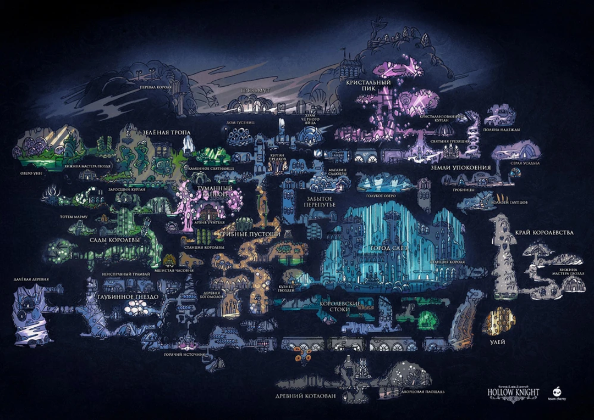

Hollow Knight
Hollow Knight — это 2D-игра, разработанная студией Team Cherry.
Она вышла 24 февраля 2017 года и получила широкое признание за атмосферный мир, глубокий сюжет, сложную боевую систему и детализированную проработку элементов.
Hollow Knight сочетает в себе элементы платформера, исследования мира, развития персонажа и сражений с противниками.
Ключевая особенность — взаимосвязь этих элементов: чтобы продвигаться вперёд, нужно использовать все доступные возможности.
Типа крутой текст